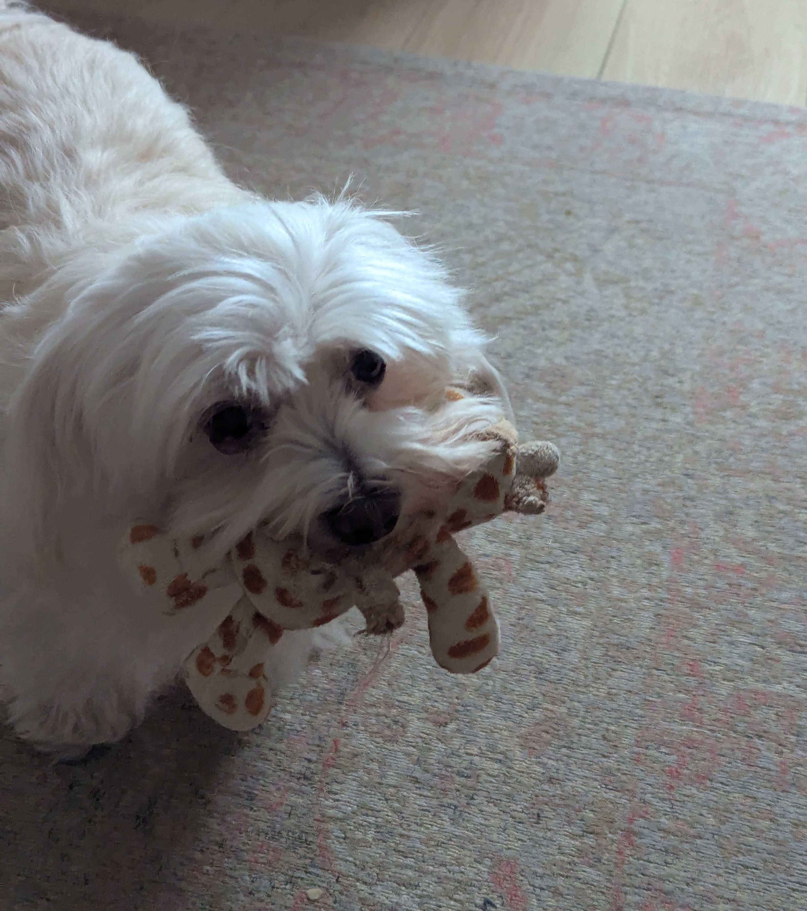

Home Page
Howdy!
Welcome to my humble abode of the internet! I studied Game Development from 2022-2026. Now I'm a student at the MSc Creative Technologies course. I am currently learning HTML, CSS and Javascript. I want to learn C and Robotics and eventually make a Toy Robot. Fun Facts! My favourite game is Cult of the Lamb. My favourite colour is Orange. When I'm not working on my projects, I like to draw and sometimes play guitar. I like coffee too, tho maybe a bit too much.
